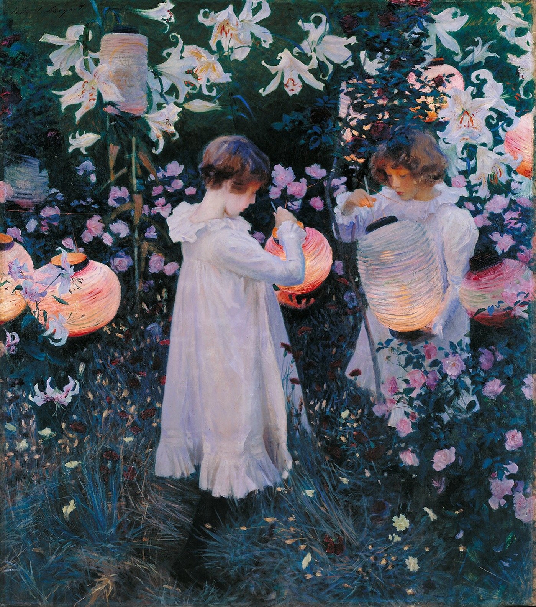

a garden in Broadway, the summers of 1885 and 1886 · after John Singer Sargent
Two sisters light the paper lanterns before the dusk goes.
waiting for your sister…
John Singer Sargent painted Dolly and Polly Barnard lighting Chinese lanterns in a garden at Broadway in the Cotswolds: from September to early November 1885 at Farnham House, and again in the summer of 1886 at Russell House, finishing in October. You have just been one of them.
What is real. He painted out of doors and could work for only a few minutes each evening, while the mauve light of dusk held. When autumn came and the flowers died he put artificial ones in their place. His friend Edmund Gosse saw him stand back from the canvas, run forward over the lawn “with the action of a wag-tail” to plant quick dabs of paint, and retire again. The Tate's catalogue gives Dolly as eleven, on the left, and Polly as seven, on the right. The title is a line from a song then popular, “The Wreath” by Joseph Mazzinghi. Their mother stood for her own portrait that same autumn, in the evenings: Mrs Frederick Barnard, 1885, also in the Tate.
What you did. You got everything ready first, and the picture was painted only in the few minutes of mauve light, with both of you standing still in your places. The Tate says: “Sargent was able to work for only a few minutes each evening when the light was exactly right. He would place his easel and paints beforehand, and pose his models in anticipation of the few moments when he could paint the mauvish light of dusk.” Gosse, who watched, says it “occupied but two or three minutes, the light rapidly declining”. The real picture took two autumns of such evenings; here eight seconds of standing still stand for them, and an evening missed is followed at once by the next.
What is imagined. The plan of this garden, its house and wall, how many lanterns hung in it and where, the breeze, the fireflies, the race against the dark, the painter's clothes, and every word spoken here: none of that comes from a source. Mrs Barnard was painted indoors, not at a garden door.
Paintings: public domain, via Wikimedia Commons (Tate, London). Sources for each fact: sargent/research/FINDINGS.md.